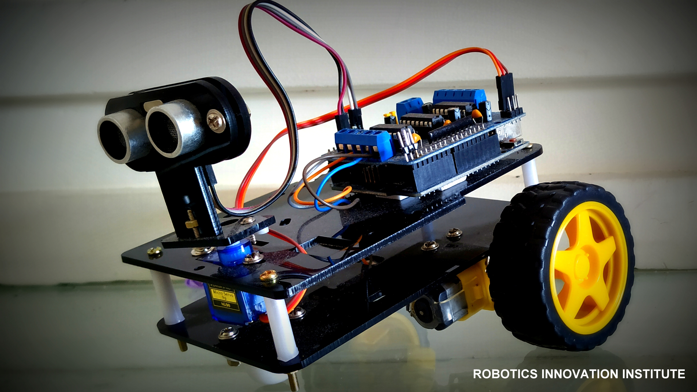
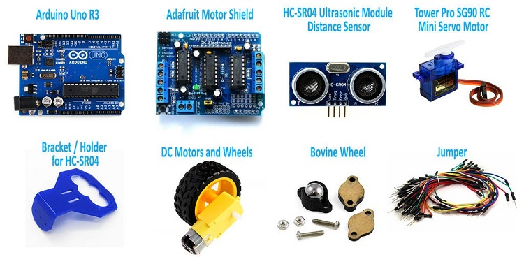
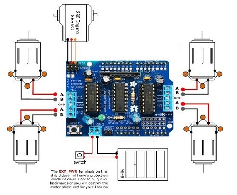
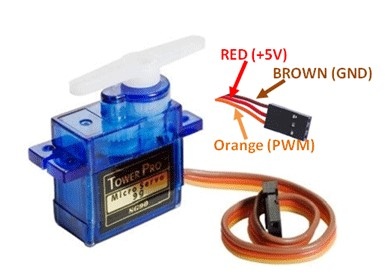
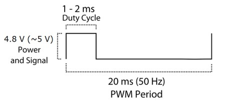
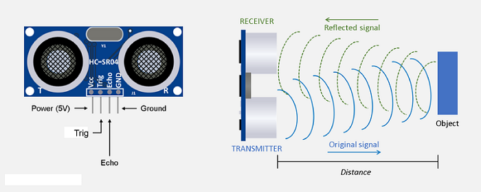
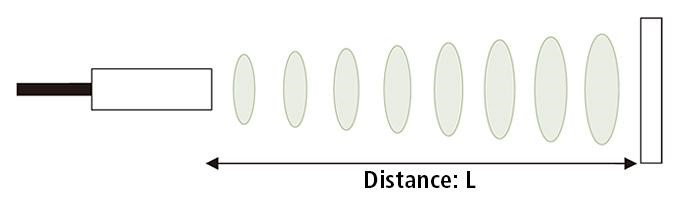
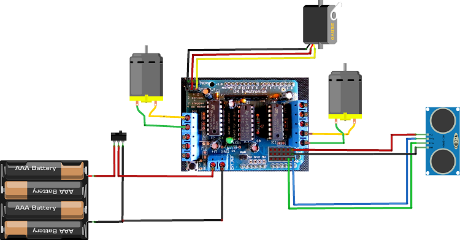

In this project, we will explain how to design and develop an Obstacle Avoiding Robotic Car using an Arduino Uno, an Adafruit Motor Shield, an Ultrasonic Sensor, DC Gear Motors, and a Servo Motor. The Obstacle Avoiding Robot is an intelligent device that can automatically sense the obstacle in front of it and steer to avoid collisions by turning left or right according to the clear path.

Figure 1: Fully Assembled Obstacle Avoiding Robotic Car
- Navigates unknown environments by autonomously avoiding collisions.
- Utilizes an ultrasonic sensor to measure target distances dynamically.
- Powered by an Adafruit Motor Shield with integrated drivers for DC & Servo motors.
- Demonstrates precise pathfinding control loops without manual intervention.
Project Demonstration Video
Hardware Requirements

Figure 2: Complete Hardware Integration Layout
- Microcontroller: Arduino Uno board, USB Cable
- Motor Driver: Adafruit Motor Shield
- Motors: DC 3-6V BO Gear Motors & TowerPro SG-90 Servo Motor
- Sensor: HC-SR04 Ultrasonic Sensor
- Power Source: 9V Li-ion Battery / External Battery Pack
- Chassis: Robotic Chassis kit & wheels
Core Component Deep-Dive
1. Arduino Uno Brain
The Arduino Uno is a micro-controller board based on the ATmega328. It has 14 digital input/output pins (where 6 can be used as PWM outputs), 6 analog inputs, a 16 MHz ceramic resonator, a USB connection, a power jack, an ICSP header, and a reset button. It contains everything needed to support the microcontroller; simply connect it to a computer with a USB cable or power it with an AC-to-DC adapter or battery to get started.

Figure 3: Arduino Uno Microcontroller
Arduino Uno Specifications
- ATmega328 Controller operating at 16MHz
- 13 Digital I/O Pins & 6 PWM Channels
- Input Voltage: 6V to 20V DC
- 32 KB Flash memory, 2 KB SRAM, 1 KB EEPROM
- Robust library ecosystem for rapid sensor integration
2. Adafruit Motor Shield
The Adafruit Motor Shield is a great and quick way to control DC motors, servos, or even stepper motors. It has the capability of controlling up to 2 stepper motors, 4 DC motors, and 2 hobby servos. Perfect for compiling multi-motor robotics applications on a single board.

Figure 4: Adafruit H-Bridge Motor Shield
Motor Shield Specifications
- 2 connections for 5V 'hobby' servos connected to Arduino's high-resolution dedicated timer - no jitter!
- 4 H-Bridges: TB6612 chipset provides 1.2A per bridge (3A peaks) with thermal shutdown protection. Can run motors on 4.5VDC to 13.5VDC.
- Up to 4 bi-directional DC motors with individual 8-bit speed selection.
- Polarity protected 2-pin terminal block and jumper to connect external power.
3. BO Gear Motor with Plastic Tire Wheel
A DC Geared BO (Battery Operated) motor is a simple DC motor equipped with a gearbox attached to it. It provides high torque and steady angular speed, perfect for navigating different types of terrains.

Figure 5: High-torque BO Geared Motor & Wheel Assembly
Geared Motor Specifications
- Operating Voltage: DC 3V - 6V
- Current consumption: 100mA - 120mA
- Reduction gear ratio: 48:1
- RPM (with tire): 100 - 240 RPM
- Tire Diameter: 65mm
4. TowerPro SG-90 Servo Motor
A servo motor is an electrical device that can rotate an object with great precision. To make the motor rotate, we power it with +5V and send PWM (Pulse Width Modulation) control signals to the signal wire. By varying the on-time pulse duration from 1ms to 2ms, we can control its angle precisely from 0° to 180°.

Figure 6: TowerPro SG-90 Servo Motor

Figure 7: PWM Steering Pulse Width Calibration Diagram
5. HC-SR04 Ultrasonic Sensor
Ultrasonic sensors measure distance by utilizing high-frequency sound waves. The sensor head emits an ultrasonic burst and measures the time interval until the wave reflects off a target and returns. The distance is calculated using the physical constant of sound speed: Distance L = 1/2 × T × C (where T is roundtrip time, and C is the speed of sound).

Figure 8: HC-SR04 Ultrasonic Sensor Module

Figure 9: Distance Measurement Propagation Diagram
Circuit Architecture
The circuit utilizes the Adafruit Motor Shield mounted on top of the Arduino Uno. The DC gear motors connect directly to the terminal blocks, and the SG90 servo connects to the dedicated 5V Servo_1 pins. The HC-SR04 ultrasonic sensor is powered from the shield's 5V supply, with its trigger and echo lines routed to Analog Pins A0 and A1.

Figure 10: Electronic Circuit Hookup Schematic
Arduino Source Code
Upload the following code to your Arduino Uno board using the Arduino IDE. Make sure you have installed the AFMotor and Servo libraries beforehand.
// Obstacle Avoiding Robotic Car using Adafruit Motor Shield - NextGenRoboticX
#include <AFMotor.h>
#include <Servo.h>
const int TrigPin = A0; // Trig pin connected to Analog A0
const int EchoPin = A1; // Echo pin connected to Analog A1
AF_DCMotor motor1(1); // Left Front Motor
AF_DCMotor motor2(2); // Left Rear Motor
AF_DCMotor motor3(3); // Right Front Motor
AF_DCMotor motor4(4); // Right Rear Motor
Servo scanServo;
void setup() {
pinMode(TrigPin, OUTPUT);
pinMode(EchoPin, INPUT);
scanServo.attach(10); // Servo connected to Servo_1 header
scanServo.write(90); // Center position
delay(500);
// Set initial motor speed
motor1.setSpeed(200);
motor2.setSpeed(200);
motor3.setSpeed(200);
motor4.setSpeed(200);
}
int getDistance() {
digitalWrite(TrigPin, LOW);
delayMicroseconds(2);
digitalWrite(TrigPin, HIGH);
delayMicroseconds(10);
digitalWrite(TrigPin, LOW);
long duration = pulseIn(EchoPin, HIGH);
return duration * 0.034 / 2; // Distance in cm
}
void loop() {
int distance = getDistance();
if (distance > 25) {
moveForward();
} else {
stopRobot();
delay(300);
lookAroundAndSteer();
}
delay(50);
}
void lookAroundAndSteer() {
scanServo.write(150); // Scan Left
delay(500);
int leftDistance = getDistance();
scanServo.write(30); // Scan Right
delay(500);
int rightDistance = getDistance();
scanServo.write(90); // Return Center
delay(300);
if (leftDistance > rightDistance && leftDistance > 25) {
turnLeft();
delay(600);
} else if (rightDistance > leftDistance && rightDistance > 25) {
turnRight();
delay(600);
} else {
moveBackward();
delay(800);
turnRight();
delay(600);
}
stopRobot();
}
void moveForward() {
motor1.run(FORWARD);
motor2.run(FORWARD);
motor3.run(FORWARD);
motor4.run(FORWARD);
}
void stopRobot() {
motor1.run(RELEASE);
motor2.run(RELEASE);
motor3.run(RELEASE);
motor4.run(RELEASE);
}
void turnLeft() {
motor1.run(BACKWARD);
motor2.run(BACKWARD);
motor3.run(FORWARD);
motor4.run(FORWARD);
}
void turnRight() {
motor1.run(FORWARD);
motor2.run(FORWARD);
motor3.run(BACKWARD);
motor4.run(BACKWARD);
}
void moveBackward() {
motor1.run(BACKWARD);
motor2.run(BACKWARD);
motor3.run(BACKWARD);
motor4.run(BACKWARD);
}